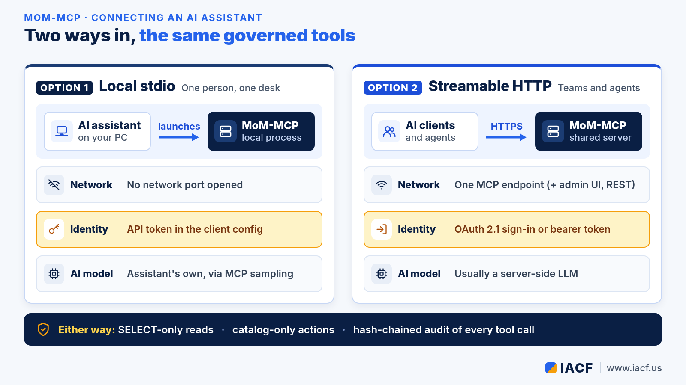
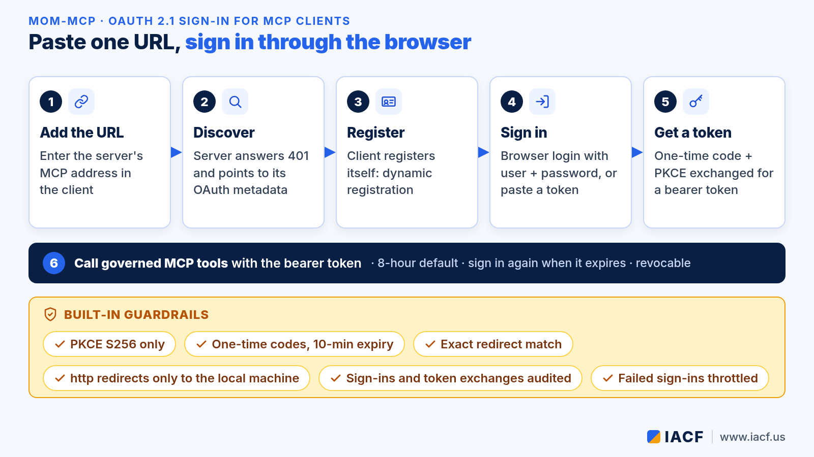
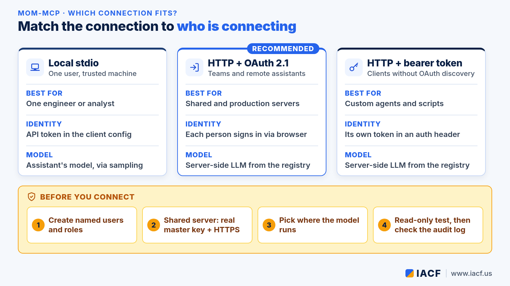

Connecting an AI Assistant to MoM-MCP: stdio or HTTP with OAuth 2.1 Sign-In
MoM-MCP is IACF's bridge between AI and large language models (LLMs) and the manufacturing applications a plant already runs: MES/MoM, ERP, PLM, CRM, QMS and others. It speaks the Model Context Protocol (MCP). That means any MCP-compatible AI assistant, such as Claude Desktop or Claude Code, or a custom agent can use its governed tools: datasets and KPIs, schema and glossary lookups, grounded text-to-SQL, manufacturing skills and the configured action catalog.
This guide covers the two ways to connect, local stdio and shared Streamable HTTP. It also shows how the built-in OAuth 2.1 sign-in lets a remote client log in through the browser, so nobody has to copy tokens around. New to MoM-MCP? Start with the introduction to MoM-MCP. To see which edition runs where, read Choosing a MoM-MCP edition.

Two transports, the same governed tools
Both transports offer the same tools. What changes is where the server runs, how the client proves who it is, and which model does the AI work.
| Local stdio | Streamable HTTP | |
|---|---|---|
| Where it runs | On the user's machine, started by the AI assistant | On a shared server that many clients and agents reach |
| Network | No network port opened | One MCP endpoint, optionally alongside the admin UI and REST API |
| Identity | API token in the client's MCP configuration | OAuth 2.1 browser sign-in, or a bearer token header |
| AI model | The assistant's own model, through MCP sampling | Usually a server-side LLM |
| Best for | One engineer or analyst at one desk | Teams, remote agents and production use |
Option 1: local stdio for one person at one desk
With stdio, the AI assistant launches MoM-MCP as a local process and talks to it over standard input and output. You register the server in the assistant's MCP configuration and add an API token. The token comes from first-time setup or from the Users & tokens page in the admin UI. The session then runs as a real user, with that user's tenant and roles.
If you leave the token out, the server falls back to a local development identity. Use that only on a trusted personal machine. An administrator can turn anonymous access off completely.
By default, stdio uses MCP sampling. The assistant supplies the model for skills and narration, so the server needs no LLM key of its own.
Option 2: Streamable HTTP for shared and remote clients
In HTTP mode, MoM-MCP runs as a shared server with one MCP endpoint. It can run combined with the admin UI and REST API, MCP only, or UI only, so the MCP endpoint can stay on a private network while the UI is hosted elsewhere. Every MCP request must carry a bearer token, and there are two ways to get one.
OAuth 2.1 browser sign-in (recommended)
MoM-MCP includes an OAuth 2.1 authorization server that implements the MCP authorization flow. If your client can add a custom connector by URL, you only enter the server's MCP address. The rest happens automatically:

- The client calls the endpoint without a token. The server replies with a pointer to its authorization metadata.
- The client reads the discovery documents and registers itself (dynamic client registration).
- A browser opens the MoM-MCP sign-in page. The user signs in with a username and password, or pastes an existing token.
- The client trades a one-time code, protected by PKCE, for a bearer token.
- The client calls MCP tools with that token.
Several guardrails are built in:
- Only the PKCE S256 method is accepted.
- Each code works once and expires after ten minutes.
- Redirect addresses must exactly match a registered one, and plain-http redirects are allowed only to the local machine.
- Client registrations, sign-ins and token exchanges are written to the audit log.
- Repeated failed sign-ins are temporarily blocked.
Issued tokens are ordinary sessions. They appear in the token list, can be revoked, and expire after eight hours by default. Refresh tokens are not implemented yet, so the client repeats the browser sign-in when a token expires.
Manual bearer token
Some clients don't support OAuth discovery. For those, add the endpoint to the client's HTTP configuration with an Authorization header that carries an API token from the Users & tokens page. It's the same kind of token the REST API accepts.
Choosing where the model runs
Under stdio, sampling lets the assistant supply the model. Over HTTP, most MCP clients don't support sampling yet, so plan on a server-side LLM. MoM-MCP's provider registry covers Anthropic, OpenAI, Azure OpenAI, AWS Bedrock, Google Vertex AI and Gemini, Ollama and any OpenAI-compatible endpoint. Pure data tools (datasets, KPIs, schema and glossary lookups) work without any LLM. Background work, such as scheduled or message-triggered skills and admin chat, always needs a server-side model.
Which path fits?

- Local stdio: one user on a trusted machine, no open port.
- HTTP + OAuth 2.1 sign-in: teams and remote assistants, each person signed in as themselves.
- HTTP + bearer token: custom agents and clients without OAuth discovery, each with its own token.
Checklist before you connect
- Initialize the server and use the bootstrap admin access to create named users with the right roles.
- Pick the transport: stdio for a single desk, HTTP for anything shared.
- For an HTTP server that other machines can reach, set a real encryption master key. The server will not start on a non-local address without one. Publish the endpoint at an HTTPS address.
- Decide where the model runs: sampling from the client, or a server-side provider.
- Start with a read-only question, then check the result in the audit log.
Whichever path you choose, governance stays the same. Reads pass a SELECT-only gate with per-request row and column policies. Writes go only through the configured action catalog, never as direct SQL into MES core tables. Every tool call is recorded in a hash-chained audit log. To see how governed actions turn into approved work, read Inside the MoM-MCP flow engine.
Want help connecting your AI assistant or agents to MoM-MCP? Visit www.iacf.us or email info@iacf.us.